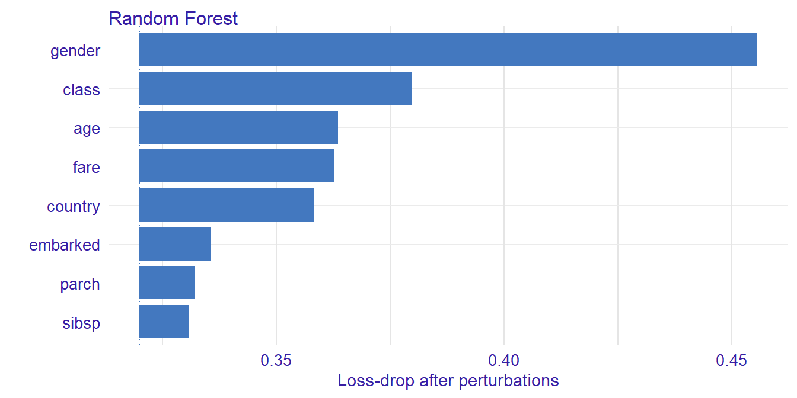
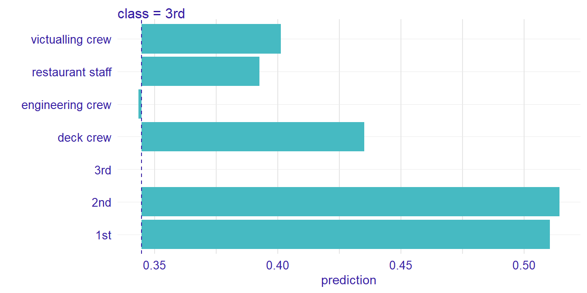
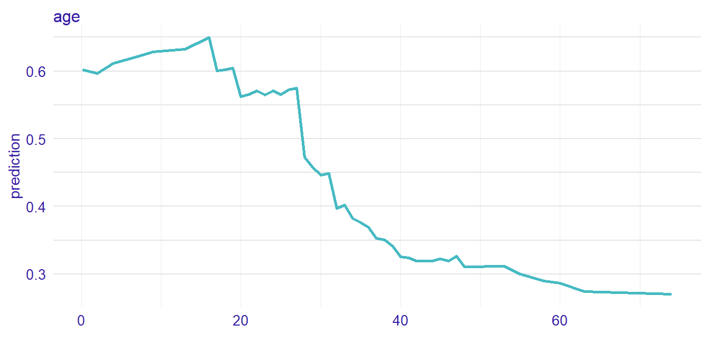
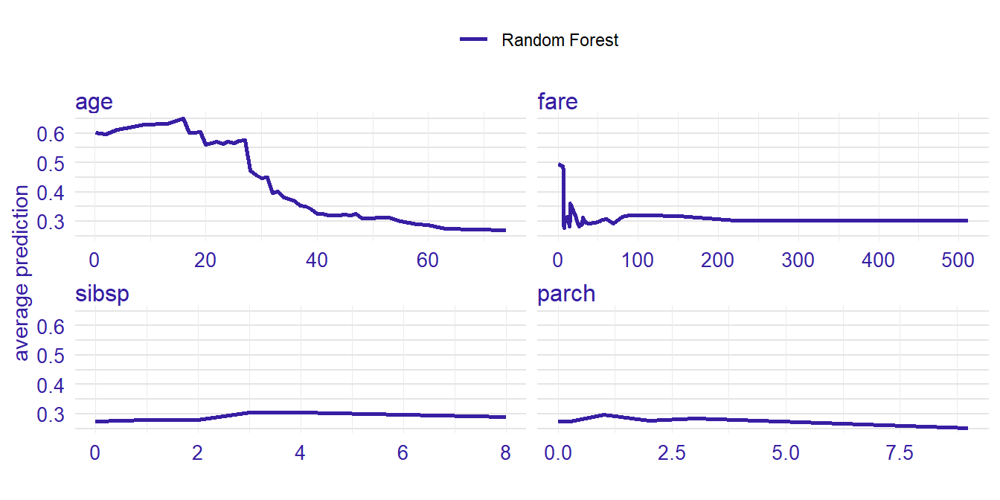
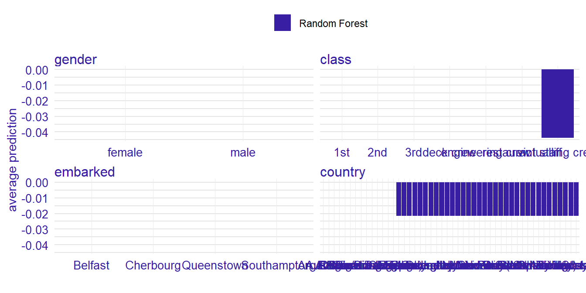

Explanations in natural language
Adam Izdebski
2019-08-24
Source:vignettes/Describing-Explanations.Rmd
Describing-Explanations.RmdIntroduction
We adress the problem of insuficient interpretability of explanations for domain experts. We solve this issue by introducing describe() function, which automaticly generates natural language descriptions of explanations generated with ingredients package.
ingredients Package
The ingredients package allows for generating prediction validation and predition perturbation explanations. They allow for both global and local model explanation.
Generic function decribe() generates a natural language description for explanations generated with feature_importance(), ceteris_paribus() functions.
To show generating automatic descriptions we first load the data set and build a random forest model classifying, which of the passangers survived sinking of the titanic. Then, using DALEX package, we generate an explainer of the model. Lastly we select a random passanger, which prediction’s should be explained.
library("DALEX")
library("ingredients")
library("randomForest")
titanic <- na.omit(titanic)
model_titanic_rf <- randomForest(survived == "yes" ~ .,
data = titanic)
explain_titanic_rf <- explain(model_titanic_rf,
data = titanic[,-9],
y = titanic$survived == "yes",
label = "Random Forest")#> Preparation of a new explainer is initiated
#> -> model label : Random Forest
#> -> data : 2099 rows 8 cols
#> -> target variable : 2099 values
#> -> predict function : yhat.randomForest will be used ([33mdefault[39m)
#> -> predicted values : numerical, min = 0.008741177 , mean = 0.3236862 , max = 0.9910744
#> -> residual function : difference between y and yhat ([33mdefault[39m)
#> -> residuals : numerical, min = -0.7971273 , mean = 0.0007539639 , max = 0.8932719
#> [32mA new explainer has been created![39m#> gender age class embarked country fare sibsp parch
#> 1908 male 43 victualling crew Southampton Wales 0 0 0Now we are ready for generating various explantions and then describing it with describe() function.
Feature Importance
Feature importance explanation shows the importance of all the model’s variables. As it is a global explanation technique, no passanger need to be specified.

Function describe() easily describes which variables are the most important. Argument nonsignificance_treshold as always sets the level above which variables become significant. For higher treshold, less variables will be described as significant.
#> The number of important variables for Random Forest's prediction is 5 out of 8.
#> Variables gender, class, age have the highest importantance.Ceteris Paribus Profiles
Ceteris Paribus profiles shows how the model’s input changes with the change of a specified variable.
perturbed_variable <- "class"
cp_rf <- ceteris_paribus(explain_titanic_rf,
passanger,
variables = perturbed_variable)
plot(cp_rf, variable_type = "categorical")
For a user with no experience, interpreting the above plot may be not straightforward. Thus we generate a natural language description in order to make it easier.
#> For the selected instance, prediction estimated by Random Forest is equal to 0.126.
#>
#> Model's prediction would increase substantially if the value of class variable would change to "deck crew", "1st". On the other hand, Random Forest's prediction would decrease substantially if the value of class variable would change to "restaurant staff". The largest change would be marked if class variable would change to "deck crew".
#>
#> Other variables are with less importance and they do not change prediction by more than 0.05%.Natural lannguage descriptions should be flexible in order to provide the desired level of complexity and specificity. Thus various parameters can modify the description being generated.
#> Random Forest predicts that for the selected instance, the probability that the passanger will survive is equal to 0.126
#>
#> The most important change in Random Forest's prediction would occur for class = "deck crew". It increases the prediction by 0.322.
#> The second most important change in the prediction would occur for class = "1st". It increases the prediction by 0.119.
#> The third most important change in the prediction would occur for class = "restaurant staff". It decreases the prediction by 0.056.
#>
#> Other variable values are with less importance. They do not change the the probability that the passanger will survive by more than 0.031.Please note, that describe() can handle only one variable at a time, so it is recommended to specify, which variables should be described.
describe(cp_rf,
display_numbers = TRUE,
label = "the probability that the passanger will survive",
variables = perturbed_variable)#> Random Forest predicts that for the selected instance, the probability that the passanger will survive is equal to 0.126
#>
#> The most important change in Random Forest's prediction would occur for class = "deck crew". It increases the prediction by 0.322.
#> The second most important change in the prediction would occur for class = "1st". It increases the prediction by 0.119.
#> The third most important change in the prediction would occur for class = "restaurant staff". It decreases the prediction by 0.056.
#>
#> Other variable values are with less importance. They do not change the the probability that the passanger will survive by more than 0.031.Continuous variables are described as well.
perturbed_variable_continuous <- "age"
cp_rf <- ceteris_paribus(explain_titanic_rf,
passanger)
plot(cp_rf, variables = perturbed_variable_continuous)
#> Random Forest predicts that for the selected instance predicts that , prediction is equal to 0.126.
#>
#> The highest prediction occurs for (age = 2), while the lowest for (age = 48).
#> Breakpoint is identified at (age = 13).
#>
#> Average model responses are *higher* for variable values *lower* than breakpoint (= 13).Ceteris Paribus profiles are described only for a single observation. If we want to access the influence of more than one observation, we need to describe dependency profiles.
Partial Dependency Profiles

#> Random Forest's mean prediction is equal to 0.126.
#>
#> The highest prediction occurs for (fare = 30.1), while the lowest for (fare = 14.1).
#> Breakpoints are identified at (fare = 39.12 and fare = 7.141).
#>
#> Average model responses are *higher* for variable values *higher* than breakpoint (= 7.141).pdp <- aggregate_profiles(cp_rf, type = "partial", variable_type = "categorical")
plot(pdp, variables = perturbed_variable)
#> Random Forest's mean prediction is equal to 0.126.
#>
#> Model's prediction would increase substantially if the value of class variable would change to "1st", "3rd". On the other hand, Random Forest's prediction would decrease substantially if the value of class variable would change to "deck crew", "restaurant staff". The largest change would be marked if class variable would change to "3rd".
#>
#> Other variables are with less importance and they do not change prediction by more than 0.05%.